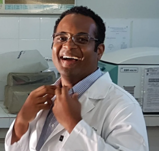
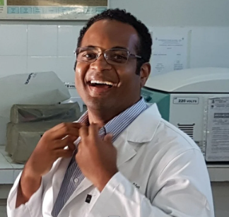

MONDAY 20th
OPENING – ASNq
ASNq - Technical Training 1
Fundaments of the Neuron and Glia Biology
Balbino Santos (UNIVASF)
Clarissa Schitine (UFBA)
Suzana Braga de Souza (UFBA)
Ma Fátima Dias Costa (UFBA)


Coffee Break
ASNq - Technical Training 1 (Session continuation)
Lunch Break
OPENING - SYMPOSIUM Lecture I
Gender-related medicine and neurodegenerative diseases
Maria Trinidad Herrero
University of Murcia - ESP
Coffee Break
Lecture III
Purines and Kinins receptors as study and therapeutic targets in neurological diseases
Henning Ulrich (USP)
University of São Paulo - BR
TUESDAY 21th
ASNq - Technical Training 2
Models of Investigation in Neurochemistry
Ravena Nascimento (UFBA)
Silvia Oliveira Bravo (IIBCE)
Juciele Olivera (UFBA)
Victor Diogenes (UFBA)


 

Coffee Break
ASNq - Technical Training 2 (Session continuation)
Lunch Break
Lecture IV
Mitochondrial dysfunction in neurometabolic diseases: Hormones to the battlefront
George Barreto
University of Limerick, IR

Coffee Break
Lecture V
Astrocytes role in neurodegenerative diseases: focus on mitochondria
Patricia Cassina
University de la República - UR

Lecture VI
Identification and characterization of potential targets to achieve neuroprotection. A focus on highly neurotoxic glial phenotypes.
Silvia Olivera Bravo
Inst. Investigaciones Biológicas
Clemente Estable- UR
WEDNESDAY 22th
ASNq - Technical Training 3
Aspects of the Scientific Method: From the Mitochondria to the Writing
Patricia Cassina (ULR)
Yanier Nunes Figueredo (CIDEM)
George Barreto (UL)
Silvia Lima Costa (UFBA)


Coffee Break
ASNq - Technical Training 3 (Session continuation)
Lunch Break
Lecture VII
Cannabidiol: Recent advances and new insights for Parkinson’s disease
Elaine A. Del-Bel
University of São Paulo,
Ribeirão Preto - BR
Coffee Break
Lecture VIII
Therapeutic potential of doxycycline and non-antibiotic tetracyclines for Parkinson's disease.
Rita Raisman-Vozari
Paris Brain Institute - FR

Lecture IX
Modeling pathological aggregation of a-Synuclein in Parkinson's disease and its consequences.
Patrick Pierre Michel
Paris Brain Institute – FR
THURSDAY 23th
ASNq - Meet the Expert Interaction with Lectures (Two Groups with Lectures)
Coffee Break
ASNq Young Researcher Session (With Lectures and Professors)
Lunch Break
Lecture X
Impact of astrocytes senescence for brain aging.
Flavia Gomes
Federal Univ. of Rio de Janeiro - BR

Coffee Break
Lecture XI
Astrocytes as target for carnosine actions.
Gustavo Ferreira
Federal Univ. of Rio de Janeiro - BRA

POSTER SESSION
FRIDAY 24th
ASNq - Meet the Expert Interaction with Lectures (Two Groups with Lectures)
Coffee Break
ASNq Young Researcher Session (With Lectures and Professors)
Lunch Break
Lecture XII
New therapeutics approach for the treatment of Alzheimer disease.
Yanier Nunes Figueiredo
Centro de Investigación y Desarrollo de
Medicamentos - CU
Coffee Break
Lecture XIII
Microglial cell dysregulation in brain aging and Alzheimer’s disease
Rommy Von-Bernhardi
University San Sebastian - CH
Lecture XIV
Targeting brain protein synthesis to rescue synapses and memory in Alzheimer’s disease.
Sergio T. Ferreira
Federal Univ. of Rio de Janeiro - BR